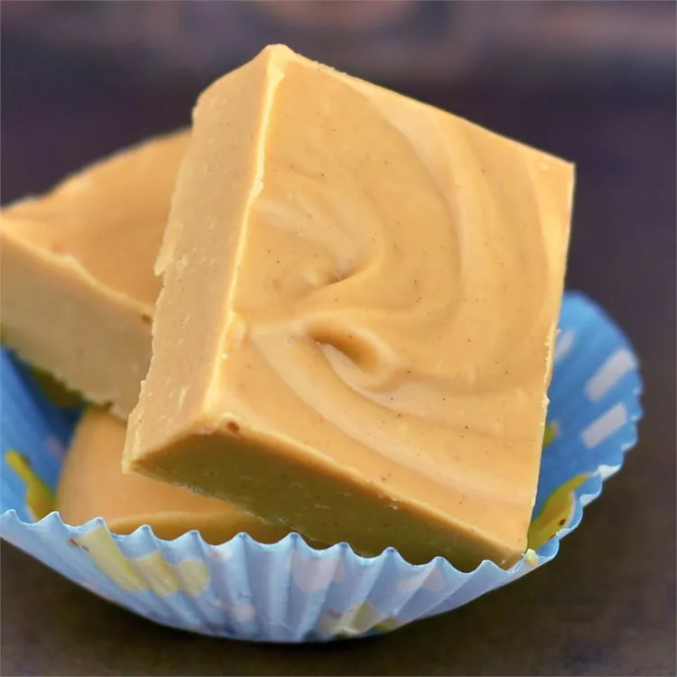

2-Ingredient Peanut Butter Fudge

Description
Want an easy and simple peanut butter fudge recipe? You found it!
Ingredients
- 1 pound white confectioners' coating (white almond bark), broken up.
- 1 (18 ounce) jar peanut butter.
Directions
- Line an 8x8-inch baking dish with plastic wrap long enough to overhang the dish by several inches on each side.
- Place broken confectioner's coating in a large glass microwave-safe bowl. Microwave on Low power until melted, smooth, and creamy, about 5 minutes, stirring every 30 seconds to 1 minute. Stir in peanut butter until fudge is thoroughly combined. Spread into the prepared baking dish.
- Refrigerate fudge until set, 1 to 2 hours. Lift out of the pan using the overhanging plastic wrap as handles; slice into 48 squares with a pizza cutter.
Home